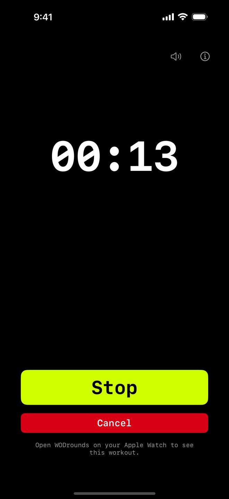

Count up · Finish fast
For Time Timer
for CrossFit
The clock counts up from zero. Press Stop the moment you finish and your time is saved. Set an optional time cap and the timer stops there automatically. Runs on iPhone, iPad, Apple Watch, Mac and Apple TV, with no account, no subscription, and no ads.
$2.99 once · iOS 16 or later
iPhone · iPad · Apple Watch · Mac · Apple TV
What is For Time?
For Time is the classic CrossFit scoring format: complete a set amount of work as fast as you can, and your score is the time on the clock. Think 21-15-9 couplets, a set number of rounds, or a benchmark WOD.
Instead of a fixed countdown, the clock counts up while you work. You press Stop the instant you finish, and WODrounds freezes your time. Add a cap when you want a hard limit, or leave it off and just race the clock.

How For Time works in WODrounds
-
The clock counts up
Start at zero and go. The elapsed time is the headline, big and readable, so you always know where you stand.
-
Optional time cap
Leave it on "No cap" to run until you stop, or set a cap from 0:30 to 60:00 and the timer ends there automatically.
-
Stop saves your time
Press Stop the moment you finish. Your time is frozen and shown as "Finished in MM:SS". On iPhone and iPad it is saved to Apple Health as well, if you allowed that when the app asked.
-
Follows on Apple Watch
Start on iPhone and your Apple Watch counts up on your wrist too. Also runs on Mac and Apple TV.
Example For Time workouts
21-15-9 couplet
For Time · Cap 10:00
- 21, then 15, then 9 reps of:
- Thrusters
- Pull-ups
- Race the clock, cap at 10 minutes
5 rounds for time
For Time · Cap 20:00
- 5 rounds of:
- 10 burpees
- 15 kettlebell swings
- 20 air squats
Chipper
For Time · No cap
- Work through a long list once
- 100 reps, split across movements
- No cap: run until you finish
Time your next For Time WOD
Available on iPhone, iPad, Apple Watch, Mac and Apple TV.
$2.99 once · iOS 16 or later
No account needed. Works offline.
Related
-
EMOM Timer →
Every Minute on the Minute. Set rounds and round length for CrossFit-style pacing.
-
Interval Timer →
Set work, rest and rounds for HIIT and circuit training.
-
Tabata Timer →
20 seconds on, 10 seconds off, 8 rounds. The classic Tabata protocol in WODrounds.
-
Timer Guide →
Learn when to use EMOM vs. intervals vs. Tabata vs. For Time and how to set up each format.